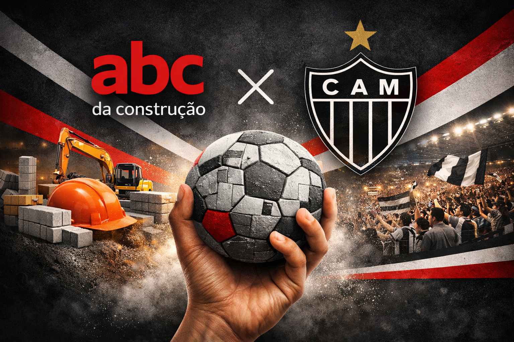
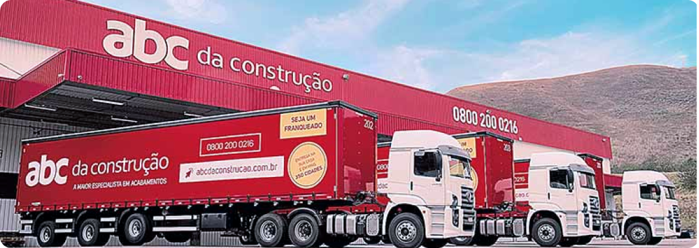
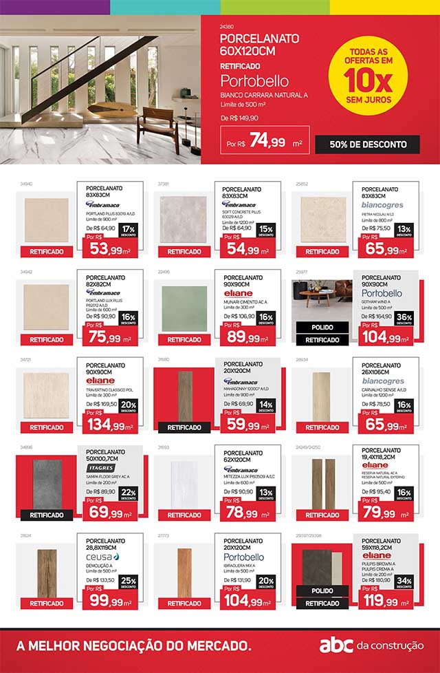

Conectando paixão e construção
A campanha destaca a parceria entre a ABC e o clube, entregando benefícios exclusivos em uma comunicação visual forte e envolvente.
Faça o seu cadastro e tenha acesso a benefícios exclusivos dessa parceria campeã! Marque esse golaço.
Uma ativação moderna para aproximar torcedores e clientes da rede ABC da Construção. Descubra ofertas, vantagens e uma jornada personalizada para sua obra ou reforma.
A campanha destaca a parceria entre a ABC e o clube, entregando benefícios exclusivos em uma comunicação visual forte e envolvente.
Encontre a Guide Shop mais próxima e receba atendimento especializado para escolher os melhores acabamentos com preço e qualidade.
Rede brasileira de acabamentos com atuação em 10 estados.
Produtos disponíveis para sua obra em um único lugar.
Ofertas, cupons e ações especiais para clientes cadastrados.
Quando o Galo celebra, a emoção vai além do campo. Essa parceria foi criada para transformar esse sentimento em uma experiência mais próxima, mais intensa e mais marcante para torcedores e clientes.
Uma imagem que traduz a força da torcida e a energia da celebração.
Um convite para viver a campanha como parte da história do clube.
Um início de jornada que prende a atenção e prepara o usuário para continuar.

Descubra agora mesmo o que preparamos para você! Não fique de fora dessa ativação com vantagens exclusivas e conteúdo especial.


Essa é a energia que conecta o Galo, a torcida e a parceria com a ABC da Construção. Uma celebração coletiva que traduz união, confiança e a força de estar lado a lado em cada conquista.
O grupo celebra como um só, reforçando o sentimento de família atleticana.
Uma imagem vibrante para transmitir energia, movimento e emoção real.
Torcida e clube compartilham a mesma vibração, fortalecendo a campanha.
A construtech com mais de 67 anos de atuação que conquistou resultados como a maior rede brasileira de acabamentos. Nossa rede cresceu nove vezes nos últimos anos e já conta com centenas de pontos físicos.
Presente em 10 estados com mais de 400 guide shops, a ABC da Construção oferece soluções completas para sua obra, desde o material até a entrega com tecnologia e atendimento próximo.
Ajudar você a finalizar sua obra de forma rápida, econômica e segura. Com expertise em revestimentos e acabamentos, entregamos o produto certo na quantidade certa.
Anos de atuação no mercado
Guide shops em operação
Produtos disponíveis
Investidos em infraestrutura e tecnologia
A ABC da Construção está onde a obra acontece. Com estrutura, capilaridade e logística inteligente, a marca reforça sua presença no dia a dia de quem busca qualidade, atendimento e entrega de verdade.
Uma operação sólida para atender com agilidade e confiança.
Uma marca grande, com presença consistente e reconhecimento nacional.
Mais perto do cliente, da loja ao canteiro, com experiência completa.

A campanha traz oportunidades especiais para quem acompanha, se cadastra e quer aproveitar o melhor da ABC da Construção com benefícios pensados para o seu momento.
Condições especiais pensadas para quem faz parte da ativação.
Uma vitrine visual forte para despertar interesse e gerar ação.
Produtos, ofertas e vantagens alinhados com a experiência da campanha.

Quando a campanha ocupa esse espaço, ela não fala só de futebol. Fala de dimensão, presença e da força de uma marca que participa dos momentos que realmente importam para a torcida.
Uma cena ampla para transmitir a dimensão da parceria.
O jogo deixa de ser apenas jogo e vira experiência compartilhada.
O ambiente ajuda a criar lembrança afetiva e valor de marca.


É nessa fração de segundo que a emoção explode. A campanha usa esse clima para traduzir energia, velocidade e entrega — tudo que conecta futebol, torcida e construção de marca.
Uma imagem viva para mostrar potência e dinamismo.
O olhar vai direto para o momento decisivo da jogada.
O impacto visual reforça a entrega da parceria.
Aqui a campanha encontra seu lado mais humano e mais forte. A imagem da torcida reforça que essa experiência não é individual: ela é compartilhada, celebrada e lembrada por muita gente ao mesmo tempo.
Mostra que a energia da campanha é aceita, vivida e sentida pelo público.
Cria um senso de grupo que fortalece a identificação com o clube.
Converte o entusiasmo da arquibancada em valor para a marca.


Essa imagem aproxima a campanha do dia a dia. Ela mostra que a experiência não é só sobre clube ou produto, mas sobre os momentos compartilhados que tornam a relação com a marca mais leve, real e memorável.
Uma cena que conversa com a vida real e com a linguagem do público.
Menos institucional, mais humana, mais fácil de se identificar.
Momentos simples e verdadeiros têm mais chance de ficar na lembrança.
O patrocínio não aparece só como assinatura. Ele reforça a seriedade da parceria, mostra força de marca e ajuda o público a enxergar consistência no projeto como um todo.
Uma base institucional que aumenta a segurança da mensagem.
A presença da marca legitima a campanha e amplia sua força.
Tudo conversa entre si: emoção, valor e posicionamento de marca.

Esclareça as principais perguntas sobre a parceria entre ABC da Construção e o clube, além das vantagens para quem se cadastra.
O início da parceria com o Clube Atlético Mineiro foi em maio de 2021, quando a ABC da Construção se tornou patrocinadora oficial do clube.
Com mais de 67 anos de história, a ABC da Construção é uma das maiores redes de acabamentos do Brasil, com estratégia digital e forte presença no varejo de materiais de obra.
Ao se cadastrar você recebe ofertas, cupons, dicas, condições exclusivas e informações sobre ativações especiais da ABC da Construção.
Acesse o diretório oficial da ABC da Construção para localizar a loja mais próxima e encontrar atendimento especializado para sua obra.
Preencha rapidinho e receba ofertas, novidades e experiências feitas para quem torce pelo CAM e gosta de construir com a ABC da Construção.
Sua mensagem foi recebida com sucesso.